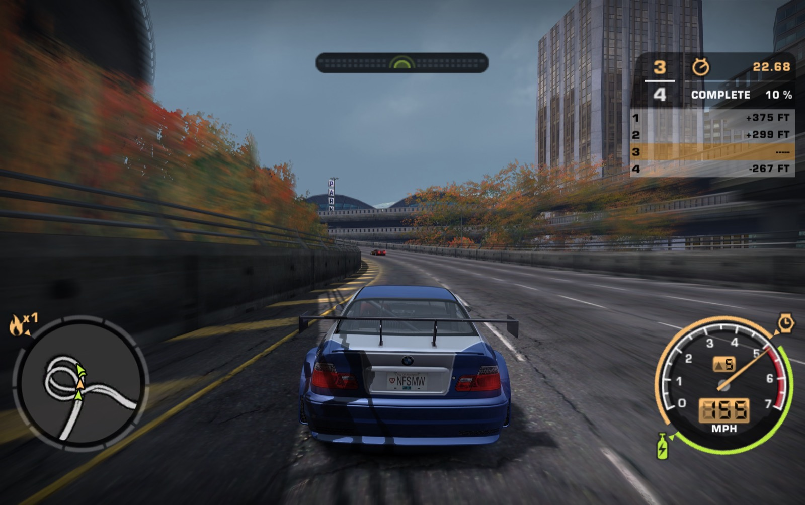
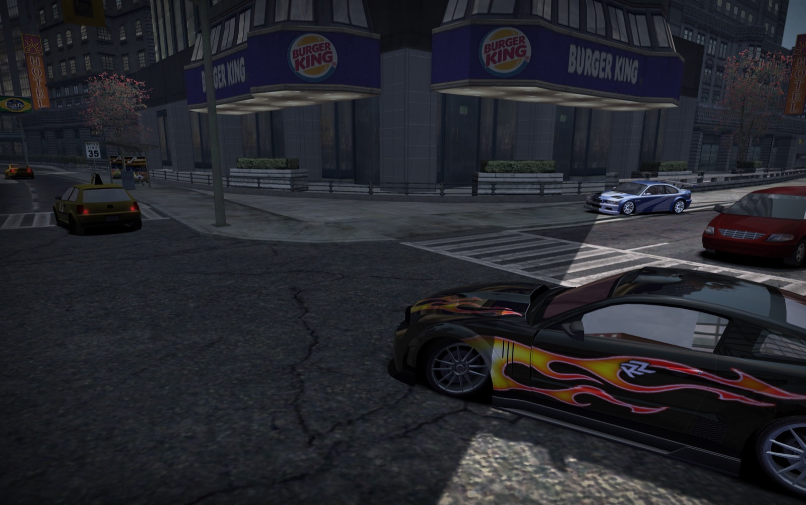
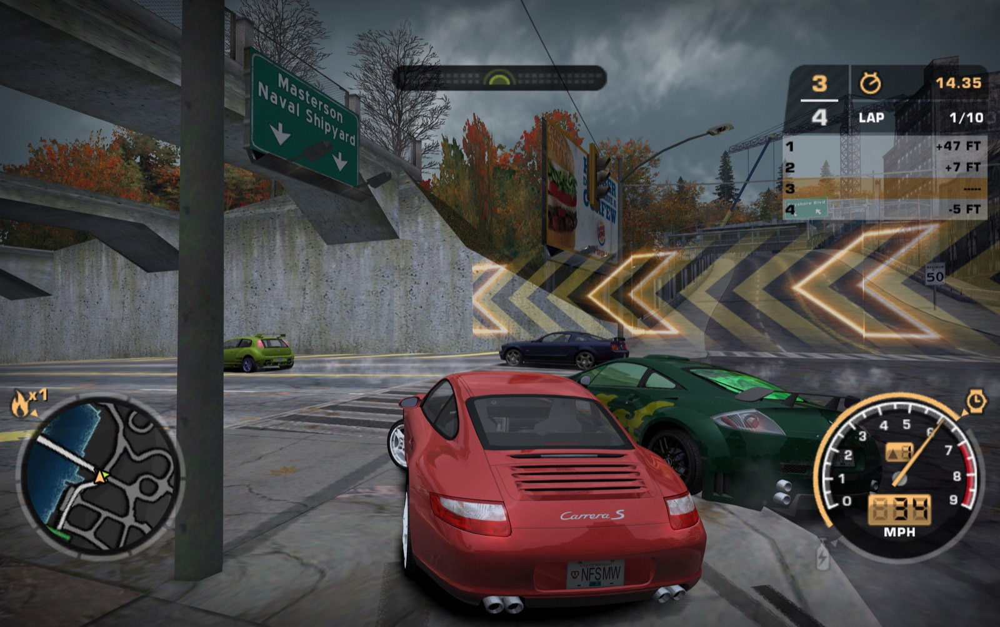
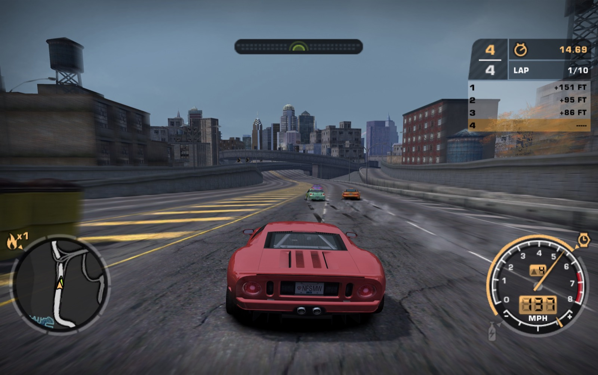
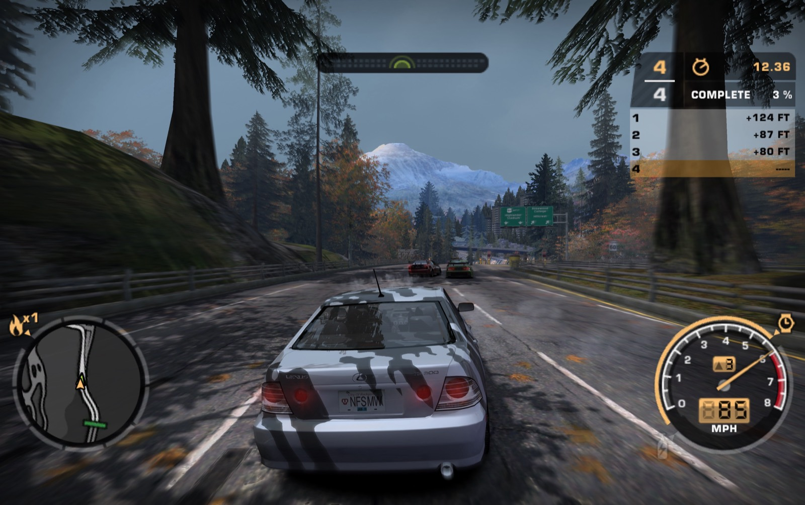

You need your own copy of the game. This project contains no game code, executables, artwork, sound, movies, tracks or textures. The Setup app builds the game on your Mac from your game files (the PC game, version 1.3). Nothing it builds is meant to be shared, and nothing is uploaded.
This project is unofficial. It is not affiliated with or endorsed by Electronic Arts, Criterion Games or Black Box. Need for Speed and Most Wanted are trademarks of Electronic Arts Inc.; all other names belong to their owners. Details: NOTICE.
Rap sheet: NFS Most Wanted Native
File 4.4.0 · Rockport PDBuilt from the original code.
The game's own 53,664 functions, recompiled for Apple Silicon. Metal, CoreAudio and macOS controller support do the rest.
Your copy. Your Mac.
We never hand out the game. You bring yours, and Setup builds it on your Mac. Nothing is uploaded.
PC and Xbox 360 in one build.
Add your own Xbox 360 copy (USA or PAL disc) and Setup brings in its world, textures, vinyls, music, cutscenes and movies.
Wired for the living room.
HDR with SDR fallback. The game's 5.1 mix, with optional Dolby Digital, Dolby Digital Plus or TrueHD output.
Plays like a console.
DualSense, DualShock 4 or Xbox controller. PS2 or Xbox layout, analog trigger pedals, rumble, DualSense adaptive triggers and button prompts that match your pad.
Checked against the original.
Differential tests run translated code and the original code on the same input and compare the results. Every update lists its fixes in the changelog.
- Platform
- Apple Silicon Mac, native
- Engine
- Original PC 1.3 code, recompiled to C
- Renderer
- Metal, widescreen, HDR Auto
- Emulator
- None
- Files given out
- None. You bring your own.
- Look
- PC, or PC + Xbox 360 with your own 360 copy
- Controllers
- DualSense, DualShock 4, Xbox and other pads macOS supports
- Licence
- MIT (the game is not relicensed)
- Prior offences
- 4.4.0 · 4.3.0 · 4.2.0 · 4.1.0 · 4.0.1 · 4.0.0
- Heat
- 6 releases in 7 days (27 Oct to 2 Nov 2026)
Still open: online free roam is off in 4.4. It comes back with a shared server in a later update. The app is not notarized by Apple, so macOS asks you once to Open Anyway.
Rockport, rendered in Metal.





Four steps to Rockport.
- Have your own PC game, version 1.3, on your Mac: the installed game folder or a
.zipof it, or your PC game discs as.isoimages with the game's 1.3 update. No Windows needed. - Download the Setup app (the disk image) from the latest release and open it.
- Choose your game folder (or a
.zipof it, or your disc images), optionally your Xbox 360 copy, and click Build. Setup compiles the game on your Mac and puts NFS Most Wanted Native.app in Applications. - Questions and help: the Discord.
What you need.
- An Apple Silicon Mac (M1 or later) with macOS 14.5 or later.
- Xcode Command Line Tools. They're free, and Setup offers to install them.
- About 12 GB free while Setup builds. The installed game uses about 9 GB, or 3.5 GB without the Xbox 360 copy.
- Your own PC game, version 1.3. If you start from the discs, you also need the official 1.3 update and a
speed.exethat has the 1.3 code. - Optional: your own Xbox 360 copy, as a folder or an
.iso. The USA and European (PAL) retail discs work.
New in 4.4.
Video clips with sound
F10 > Display > Video clip saves the picture and sound to Movies/NFSMW. HEVC or H.264, at 1080p, 1440p or 4K. Works with HDR on.
Physical car materials
Tinted glass and chrome from measured real-world values, Off by default. Physical particles give smoke and dust soft edges and scene lighting.
Build from your PC discs
Setup takes the discs as .iso images with the official 1.3 update, and installs and updates the game without Windows.
PAL Xbox 360 disc
The European retail Xbox 360 copy now works for the Xbox 360 features, as well as the USA one.
Full screen: Auto
Native full screen on the Mac's own screen, Borderless on other displays.
Junkman and cash
Junkman parts after the career, Unlimited by default. Add cash for a started career.
Also: an all-in-one app export in Setup, and problem reports you can post as a GitHub issue after you check the text. Full changelog.
In the garage.
F10 settings menu
Opens over the game. Fn+F10 on a Mac keyboard, or the touchpad click on a DualSense or DualShock 4.
Guide and look presets
F10 > Help > Guide explains every setting. Picture presets: Port, PC retail, Xbox 360 retail and My picks.
Updates on your terms
Check for updates runs only when you press it. Update now prepares the next version for your next launch.
Discord status
Shows what you're playing on Discord. Off until you turn it on.
Back the port.
The port is free and stays free. If you want to support its development, you can chip in on Ko-fi.